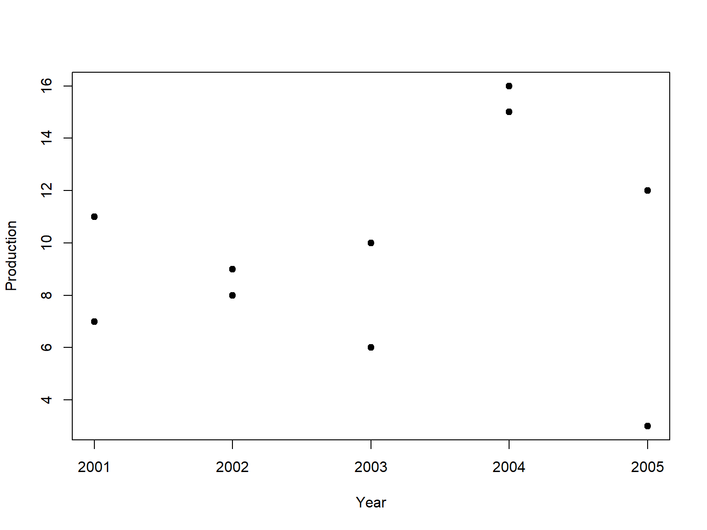

| Abdullah Al Mahmud | www.statmania.info |
Data arranged chronologically
\(Y_t = f(t); t = t_1, t_2, t_3, \cdots, t_n\)
Example
| Year | Production |
|---|---|
| 2001 | 11 |
| 2002 | 9 |
| 2003 | 10 |
| 2004 | 16 |
| 2005 | 12 |
Four Components
\(Y_t =\) Values of series at time t
\(T_t =\) Trend
\(S_t =\) Seasonal
\(C_t =\) Cyclic
\(R_t =\) Random/irregular
Additive Model
\(Y_t = T_t + S_t + C_t + R_t\)
Multiplicative Model
| Year | Production |
|---|---|
| 2001 | 11 |
| 2002 | 9 |
| 2003 | 10 |
| 2004 | 16 |
| 2005 | 12 |
| 2001 | 7 |
| 2002 | 8 |
| 2003 | 6 |
| 2004 | 15 |
| 2005 | 3 |

| Year | Production |
|---|---|
| 2001 | 11 |
| 2002 | 9 |
| 2003 | 10 |
| 2004 | 16 |
| 2005 | 12 |
| 2001 | 7 |
| 2002 | 8 |
| 2003 | 6 |
| 2004 | 15 |
| 2005 | 3 |
Steps
| Year | Production | 3-Yearly Moving Average |
|---|---|---|
| 2001 | 412 | NA |
| 2002 | 438 | \({412+438+446}\over{3}=432\) |
| 2003 | 446 | \(\frac{438+446+454}3=446\) |
| 2004 | 454 | 457 |
| 2005 | 470 | 469 |
| 2006 | 483 | \(\frac{470+483+490}3=481\) |
| 2007 | 490 | NA |